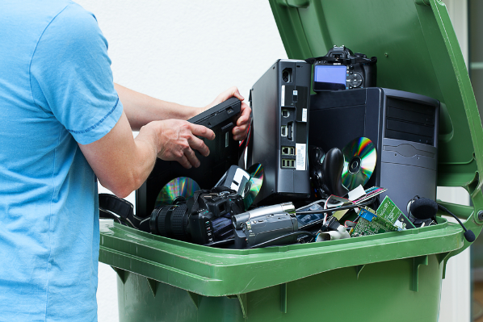

Robotic Arts Intro Fall 2017 (IA277.01)
- Instructor: Lucas Haroldsen (lharoldsen@mica.edu)
- Class Site: yasunaga.work/raif17
- syllabus: syllabus.pdf
- Resources: links.html
09/26: Expression --- [Analog output]
Review
- Analog input and serial monitor
- Serial Plotter
- Variable resistors and thresholds
- variables
- if statement and comparators
Today, we will go over together:
- Piezo element
- Analog output
- Fading LED
- RGB LED
- tone() function and pitches.h
Tonight's Code
Presentaton
Ryota Kuwakubo
electronic harvesting day
Thomas Thwaites: How I build a toaster -- from scratch

e-waste locations
- First floor of Digital Print Center next to the computer lab. There are black shelves and blue bins for broken electronics
- Brown Building First floor on the way to Cafe Doris
- Bunting First Floor next to bulletin board
HOMEWORK
Project 1: the midterm
Project 1 is due October 24th. See the detail on this link here. Spend this week to experiment with what you have learned so far in this class to think about possibility for your project. Take some time to learn materials of your choice.
Make some sketches and notes of your ideas and your entrypoit in your project. Be prepared to talk about your project.
Electronic Harvest day is NEXT WEEK!
- Bring electronics you want to take apart
- Bring drawing materials of your choice